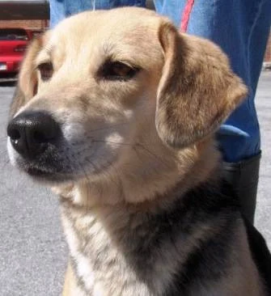
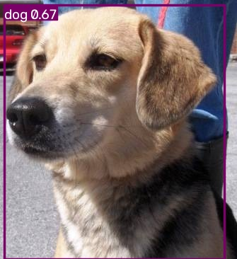
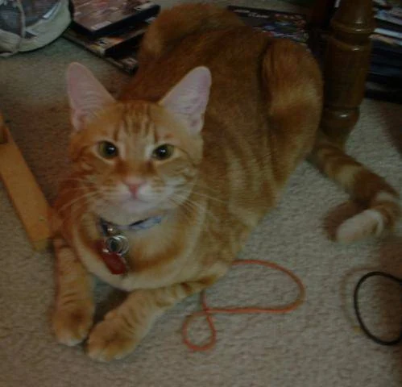

Bounding boxes
Four coordinates describe the position and size of each visible object.
class · x · y · width · heightGo beyond recognizing an image. Detect what is in it, draw the boundaries, and put a trained YOLO model to the test.
Real YOLO11 inference · Runs on your device


Object detection predicts an object's class and location in the same image. YOLO processes the image in a single network pass, producing candidate boxes and class scores. Confidence filtering and non-maximum suppression keep useful detections.
Start with a pretrained detector. Prepare cat and dog annotations, inspect the recorded custom training run, then use the actual trained model on images, video, or your webcam.
Four coordinates describe the position and size of each visible object.
class · x · y · width · heightA class score filters predictions. A high score does not guarantee correctness.
keep score ≥ thresholdIoU measures overlap between a predicted box and an annotated box.
IoU = intersection / unionRemove overlapping lower-score predictions of the same class.
predict → filter → suppressThe four learning outcomes from the supplied laboratory activity.
Gain hands-on experience with pretrained detection and real-time inference.
Collect images, annotate object locations, and organize YOLO labels.
Understand custom training, saved weights, and training hyperparameters.
Evaluate precision, recall, mAP, and examples of detection failures.
Parts 1 and 4 run exported YOLO11 models on your device. Part 2 creates real YOLO annotations. Part 3 explores your saved Python training history; GitHub Pages does not execute or simulate model training. Models and the inference runtime load only when needed.
Run the COCO-pretrained YOLO11 nano model with 80 object classes. Try a bundled photograph, your own image, a video file, or your camera.
The browser letterboxes the input to 640 × 640, converts RGB pixels to a normalized CHW tensor, executes the actual ONNX graph, and applies class-aware NMS. The Python implementation uses Ultralytics and OpenCV. The recorded desktop speed was 13.92 detection FPS excluding capture/display; browser speed is measured separately.
Explore all 60 original laboratory photographs. Draw boxes, choose cat or dog, and export normalized YOLO labels.
Loading the real laboratory dataset…
Drag to add a box. Each released drag saves one box in this editor. For keyboard use, load saved boxes or enter normalized coordinates below. This browser editor does not use Enter/Esc.
Divide center coordinates and box width by image width; divide center y and box height by image height. All four coordinates are between 0 and 1. The image and its label share a filename stem under matching images/train and labels/train folders (likewise val and test). The dataset ZIP contains the genuine original annotations, not browser edits.
dataset/
images/train/ images/val/ images/test/
labels/train/ labels/val/ labels/test/
path: ./dataset
train: images/train
val: images/val
test: images/test
nc: 2
names: ['cat', 'dog']Inspect the actual 10-epoch run on 42 cat and dog training images. Generate a command for the Python training script.
python part3_train.py --epochs 10This generates a command; training runs in your local Python environment.
Training box loss decreased from 1.54 to 0.89. Validation mAP50 stayed near 80%, so lower training loss alone did not demonstrate a validation improvement. Ten epochs are your requested override of the document’s 100-epoch example.
The best checkpoint is selected using validation performance, not test images. The original training script defaults to ten epochs and rejects values above ten. It initializes from pretrained YOLO11 nano weights. A lower training loss can coexist with limited generalization on unfamiliar images.
Run the actual ten-epoch cat/dog model on held-out photos, new uploads, video, or a webcam. Its only classes are cat and dog.
Run the custom model on all six test images and match boxes to your original annotations at IoU ≥ 0.50. Uses Part 4’s current confidence and NMS thresholds.
Not run. This is live fixed-threshold evaluation, separate from the recorded Ultralytics mAP below.
Precision = TP / (TP + FP); recall = TP / (TP + FN). Live matching is class-aware and greedy by confidence. It reports micro-averaged counts at the chosen fixed threshold, not mAP. Recorded Ultralytics precision/recall use its evaluation procedure; mAP averages across confidence thresholds, and mAP50–95 also averages IoU thresholds. Browser and Python resize implementations can introduce small numerical differences.
Genuine saved Ultralytics evaluation. These are recorded results, not a live run of the web demo.
Test recall of 83.33% indicates that many annotated animals were recovered. Precision of 73.04% indicates that false detections remain.
mAP50 is 80.46%, while mAP50–95 is 35.03%. Stricter overlap requirements expose remaining localization errors.
Only six test photographs were evaluated. These figures describe this demonstration set and should not be treated as a broad performance benchmark.
The written question from your Word document, with a concise real-world example.
Object detection identifies objects and locates each one using a bounding box and class label. Image classification assigns a category to the entire image without locating individual objects.
For example, classification might label a photograph “cat.” Object detection can identify two cats and one dog and draw a separate labeled box around each animal.
A prediction score is a model output used for filtering, not a measured accuracy or guarantee. Accuracy must be assessed against ground-truth annotations. This is an added explanation supporting the experiments, not another handout question.
This activity connects real-time pretrained detection, normalized annotation, custom fine-tuning, and held-out evaluation. The completed ten-epoch cat/dog detector achieved 73.04% test precision, 83.33% recall, and 80.46% mAP50.
The remaining false detections and stricter-IoU performance show why diverse data, accurate boxes, and an independent test set matter. Browser experiments extend the activity without pretending that GitHub Pages runs Python training.
